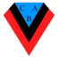

COPA ARGENTINA / ATLÉTICO TUCUMÁN 2 - BROWN (A) 0
Atlético le ganó a Brown e irá contra Independiente por los 16vos
Atlético ganó por segunda vez en el año, la primera con Pusineri, y pasó a los 16vos donde se verá con el Rojo.

El Decano festeja por segunda vez en el año. (Prensa Copa Argentina).
ATLETICO TUCUMAN
2 vs 0
BROWN (A)
Matías Orihuela 42' PT Leonardo Heredia 78' ST
Copa Argentina / 32vos de final / 27 de Abril - 21:00h. / Estadio Martearena
Se puede pensar que el equipo debe arrancar cuando comienza la temporada. Pero no siempre es así. Todos los años hay algunos a los que les cuesta más, que tardan en asentarse, en lograr una regularidad o conseguir resultados.
Y a Atlético Tucumán le pasó eso. Éste es el segundo partido que gana en lo que va de la temporada: en 13 PJ tiene 2 PG, 4 PE y 7 PP. Juan Manuel Azconzábal no pudo con el andar del Decano, a Lucas Pusineri le costó pero, ayer en su cuarta presentación, logró poner primera y los tucumanos están en 16vos de la Copa Argentina.
El partido no fue un trámite fácil, claro, a eso acostumbra esta competencia. Brown de Adrogué quería dar el batacazo y fue un hueso duro. En el primer tiempo, y haciendo poco para merecerlo, Orihuela marcó el 1-0 tras una asistencia milimétrica de Pereyra.
En el ST, contra lo que tenía que jugar el Deca era contra su propia cabeza. No pincharse. Y muy inteligente, Rius leyó el error de Arrechea, le quitó la bocha y asistió a Heredia, quien selló el 2-0. Y explotó Pusineri, que en la siguiente instancia de la Copa se verá con su ex club: Independiente.
Un día tenía que arrancar. Costó, hubo que bajarse a empujar, pero la Pusineta ganó su primer partido, metió primera y tiene que pisar el acelerador. Crecer como equipo y cerrar bien la Copa de la Liga, en la cual está último en la Zona.
Resumen del partido
COMENTARIOS
Comentar las notas de Sportia es exclusivo para usuarios logueados.